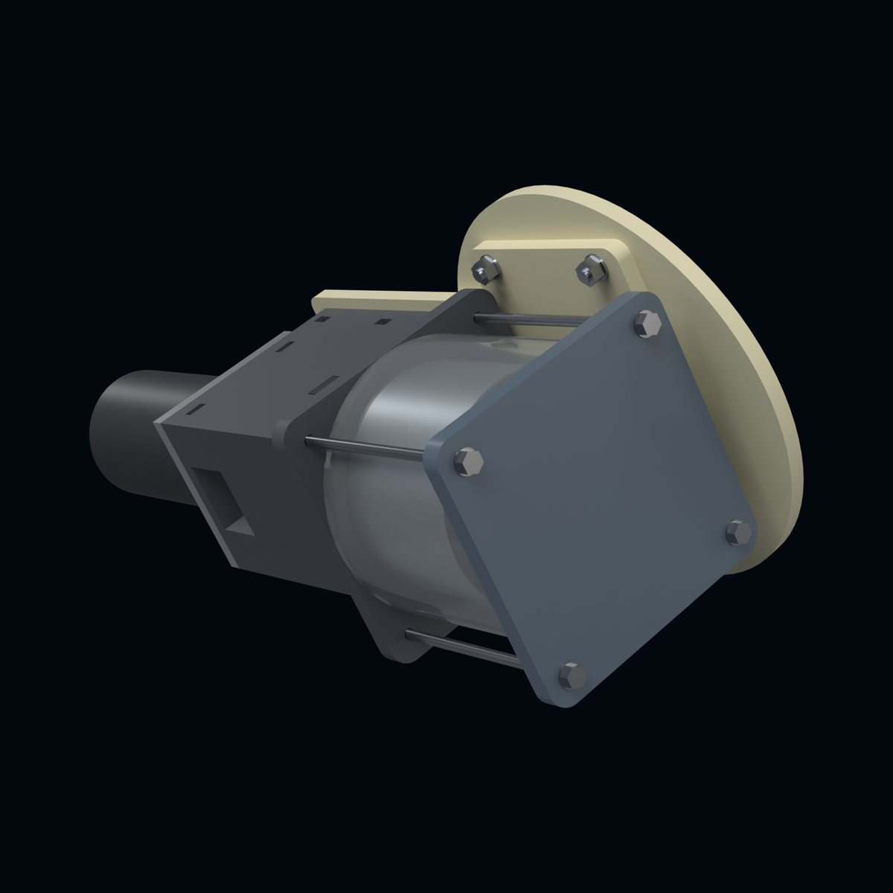
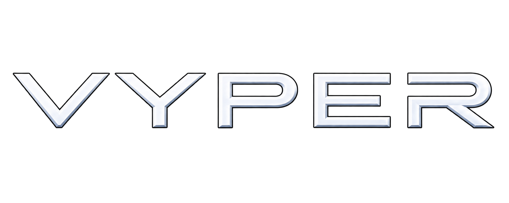

Research / Bench test
The bench test
A spinning magnet will slow a tumbling aluminum box, without touching it.


Rendered from our CAD. The rig is not built yet.

Research / Bench test
A spinning magnet will slow a tumbling aluminum box, without touching it.

Rendered from our CAD. The rig is not built yet.